Express + MySQL实现REST API的web应用
|我将分享教程，使用MySQL，node.js，express创建CRUD。请先阅读，因为这篇文章是文章的延续。在本教程中，我将创建一个简单的REST API的Web应用程序来创建，读取，更新和删除数据。重要的是要注意，本教程适合初学者。
在初始化时，创建名称为mynode
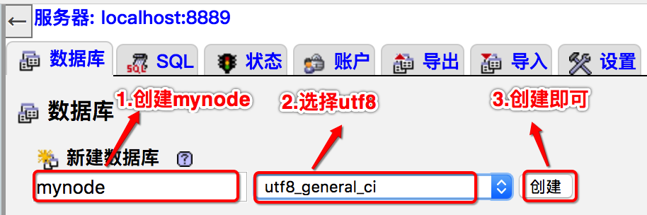
商品表的数据库
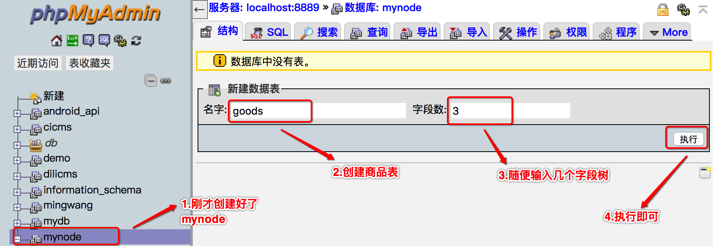
输入名字、长度等
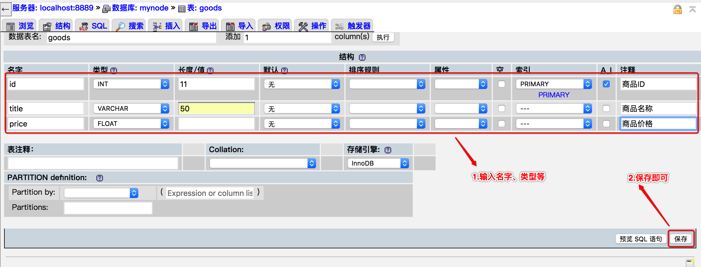
创建成功了商品表
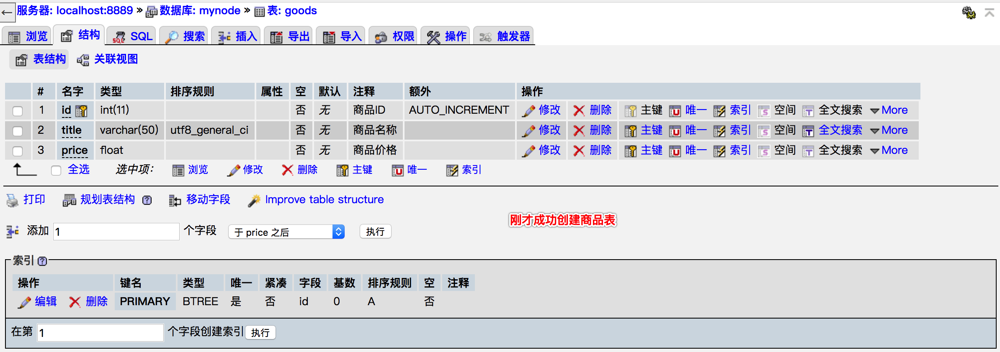
插入表
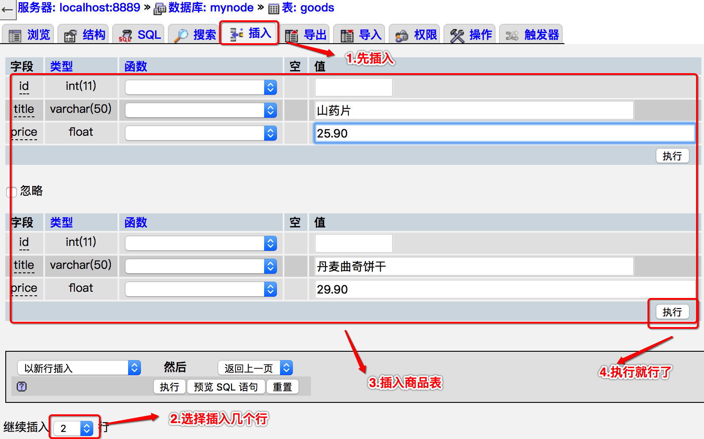
成功插入表页面
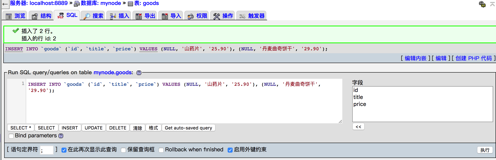
查看商品表
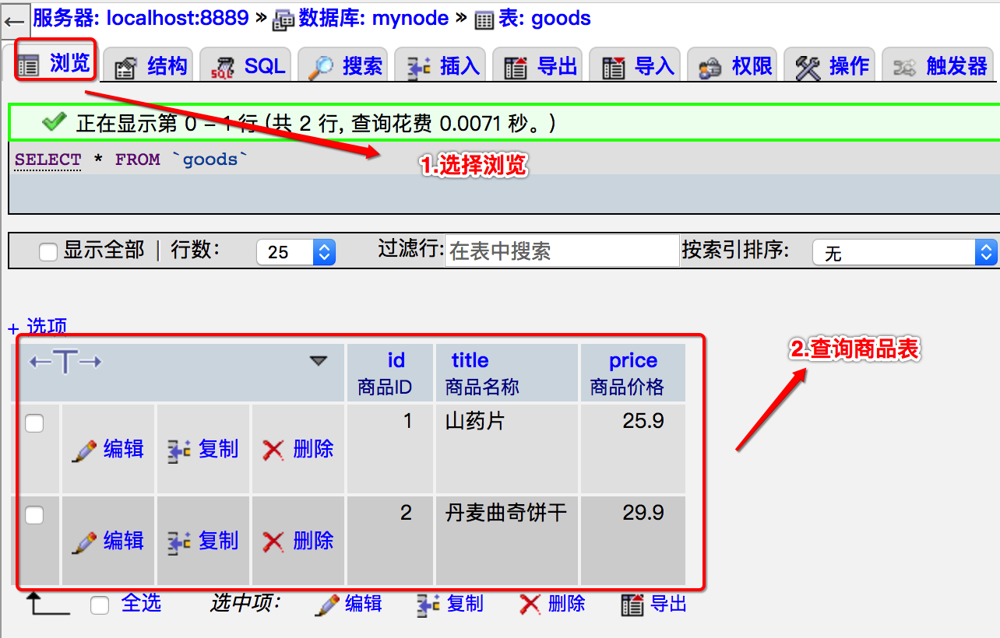
注意的是刚才我从phpMyAdmin面板来操作数据库，如果你没有phpMyAdmin面板，可以用mysql命令运行创建与插入等。
商品表数据库
--
-- 表的结构 `goods`
--
CREATE TABLE `goods` (
`id` int(11) NOT NULL COMMENT '商品ID',
`title` varchar(50) NOT NULL COMMENT '商品名称',
`price` float NOT NULL COMMENT '商品价格',
PRIMARY KEY (`id`)) ENGINE = InnoDB DEFAULT CHARSET=utf8;
--
-- 转存表中的数据 `goods`
--
INSERT INTO `goods` (`id`, `title`, `price`) VALUES
(1, '山药片', 25.9),
(2, '丹麦曲奇饼干', 29.9);
设置Restful项目
终端或命令行，创建一个项目文件夹
$ mkdir express_demo
$ cd express_demo
初始化你的项目，这将创建一个package.json文件
$ npm init
This utility will walk you through creating a package.json file.
It only covers the most common items, and tries to guess sensible defaults.
See `npm help json` for definitive documentation on these fields
and exactly what they do.
Use `npm install <pkg>` afterwards to install a package and
save it as a dependency in the package.json file.
Press ^C at any time to quit.
package name: (express_demo)
version: (1.0.0)
description:
entry point: (index.js) app.js
test command:
git repository:
keywords:
author:
license: (ISC)
About to write to /Users/zhouyulong/code/express_demo/package.json:
{
"name": "express_demo",
"version": "1.0.0",
"description": "",
"main": "app.js",
"scripts": {
"test": "echo \"Error: no test specified\" && exit 1"
},
"author": "",
"license": "ISC"
}
Is this ok? (yes)
第一种方案：首先让我们安装我们需要的依赖关系,package.json文件增加依赖包
{
"name": "express_demo",
"version": "1.0.0",
"description": "",
"main": "app.js",
"scripts": {
"test": "echo \"Error: no test specified\" && exit 1"
},
"author": "",
- "license": "ISC"
+ "license": "ISC",
+ "dependencies": {
+ "express": "~4.12.2",
+ "mysql": "~2.5.5",
+ "body-parser": "~1.12.0"
+ }
}
通过终端器命令，可以安装依赖项
$ npm install
第二种方案：通过NPM安装依赖包
$ npm install express && mysql && body-parser --save
创建app.js文件
$ touch app.js
创建一个express服务器
打开文本编辑器，复制下面的代码。
var express = require("express");
var mysql = require("mysql");
var bodyParser = require("body-parser");
var app = express();
var port = process.env.PORT || 8080;
app.use(bodyParser.urlencoded({ extended: false }));
app.use(bodyParser.json()); // Body解析器使用JSON数据
app.get('/', function(req, res) {
res.json({message:"欢迎来到API接口"});
})
app.listen(3000, function () {
console.log("✔ Express server listening on port " + port);
});
运行项目
$ node app.js
✔ Express server listening on 3000
如果要保持运行node app.js。我们可以通过npm来安装PM2如下：
$ npm install -g pm2
然后启动项目
$ pm2 start app.js --name="app"
[PM2] Spawning PM2 daemon with pm2_home=/Users/zhouyulong/.pm2
[PM2] PM2 Successfully daemonized
[PM2] Starting /Users/zhouyulong/code/express_demo/app.js in fork_mode (1 instance)
[PM2] Done.
┌──────────┬────┬──────┬───────┬────────┬─────────┬────────┬─────┬───────────┬────────────┬──────────┐
│ App name │ id │ mode │ pid │ status │ restart │ uptime │ cpu │ mem │ user │ watching │
├──────────┼────┼──────┼───────┼────────┼─────────┼────────┼─────┼───────────┼────────────┼──────────┤
│ app │ 0 │ fork │ 22448 │ online │ 0 │ 0s │ 0% │ 13.3 MB │ zhouyulong │ disabled │
└──────────┴────┴──────┴───────┴────────┴─────────┴────────┴─────┴───────────┴────────────┴──────────┘
Use `pm2 show <id|name>` to get more details about an app
如果经常改动代码，通过安装node-dev可以实现热部署。
$ sudo npm install -g node-dev
启动项目
$ node-dev app.js
✔ Express server listening on port 8080
数据库连接
修改server.js并包含MySQL连接代码。在这里你必须修改MySQL数据库名称，主机，用户名和密码
var conn = mysql.createConnection({
host: 'localhost',
user: 'root',
password: 'root',
database: 'mynode'
});
获取商品详情 这里是商品数据的路线。下载Chrome浏览器的poster扩展，这将帮助您测试这些Restful API。
// 获取商品列表
app.get('/goods', function(req,res) {
var data = {
"data": ""
}
conn.query("select * from goods", function(err, rows, fields){
if(rows.length !=0) {
data["data"] = rows;
res.json(data);
} else {
data["data"] = "无数据...";
res.json(data);
}
});
});
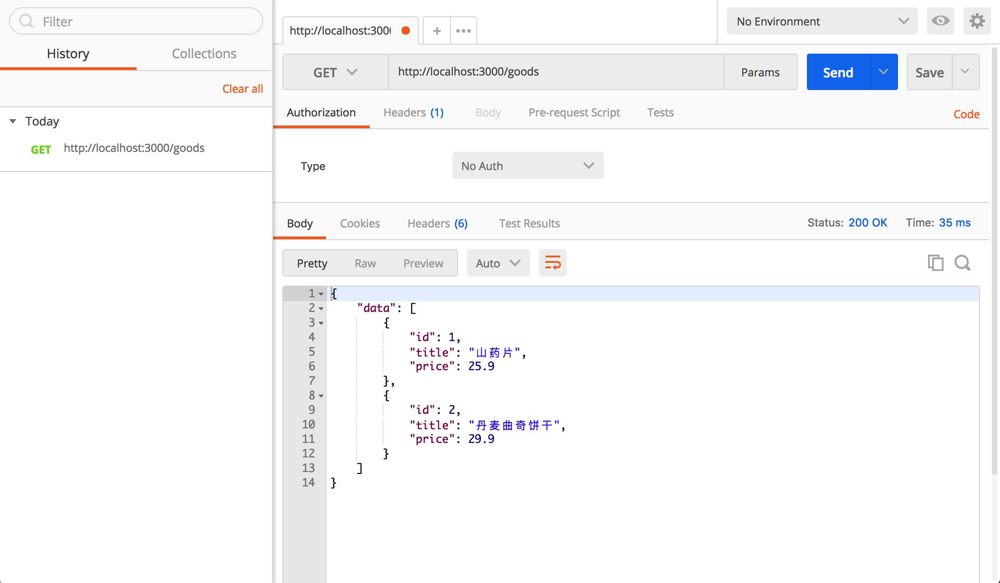
在POST请求中,我们正在创建一个商品数据，并JSON形式发送响应。 我已经创建了一个用于演示目的商品API。看下面的代码
//创建一个商品
app.post('/good', function(req, res) {
var title = req.body.title;
var price = req.body.price;
var query = "insert into ??(??, ??) values(?,?)";
var table = ["goods", "title", "price", title, price];
query = mysql.format(query,table);
conn.query(query,function(err, rows) {
if (err) {
res.json({ error: true, message: "执行MySQL查询时出错"});
} else {
res.json({ error: false, message: "成功创建商品" });
}
});
});
创建一个商品的时候，请求POST:http://localhost:3000/good
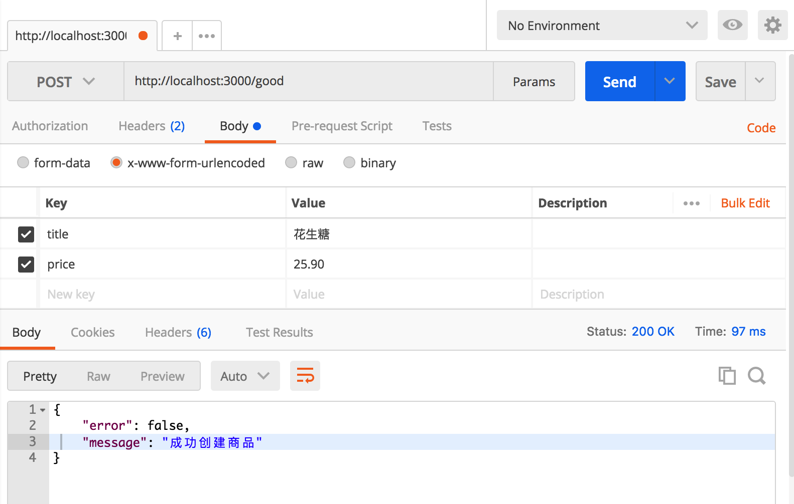
在GET请求的时候，我们查询一个商品ID。
//查询商品ID
app.get('/good/:id',function(req, res) {
var query = "select * from ?? where ?? = ?";
var table = ["goods","id",req.params.id];
query = mysql.format(query,table);
conn.query(query, function(err, rows) {
if(err) {
res.json({ error: true, message: "执行MySQL查询时出错" });
} else if(rows.length != 0){
res.json({ error: false, message: "成功", "data": rows });
} else {
res.json({ error: false, message: "无数据..."});
}
})
})
当我们查询商品ID为1的时候
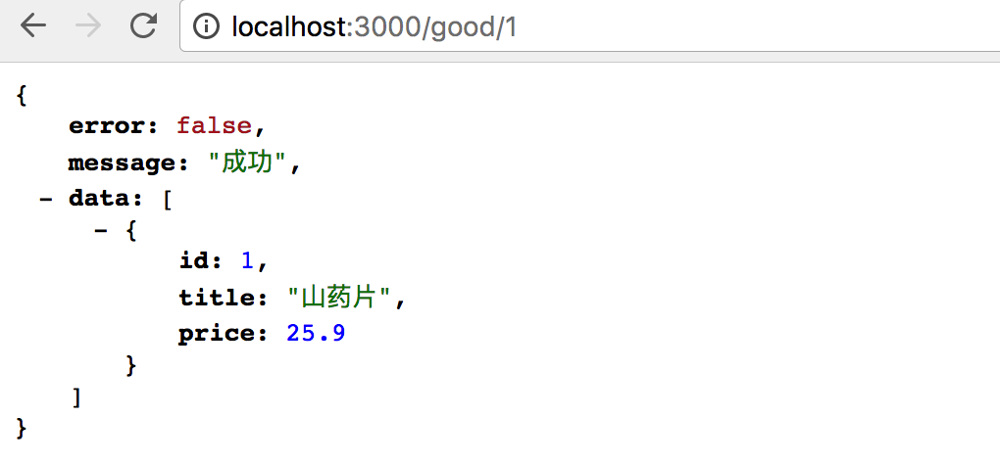
在PUT请求中，我们需要修改一个商品数据。我已经更新一个商品ID的API，如下代码
//更新一个商品
app.put('/good/:id', function (req, res) {
var id = req.params.id;
var title = req.body.title;
var price = req.body.price;
var query = "update ?? set ?? = ?,?? = ? where ?? = ?";
var table = ["goods", "title", title, "price", price, "id", id];
query = mysql.format(query, table);
conn.query(query, function (err, rows) {
if (err) {
res.json({ error: true, message: "执行MySQL查询时出错" });
} else {
res.json({ error: false, message: "更新一个商品ID：" + id });
}
});
});
当我们更新商品ID的时候
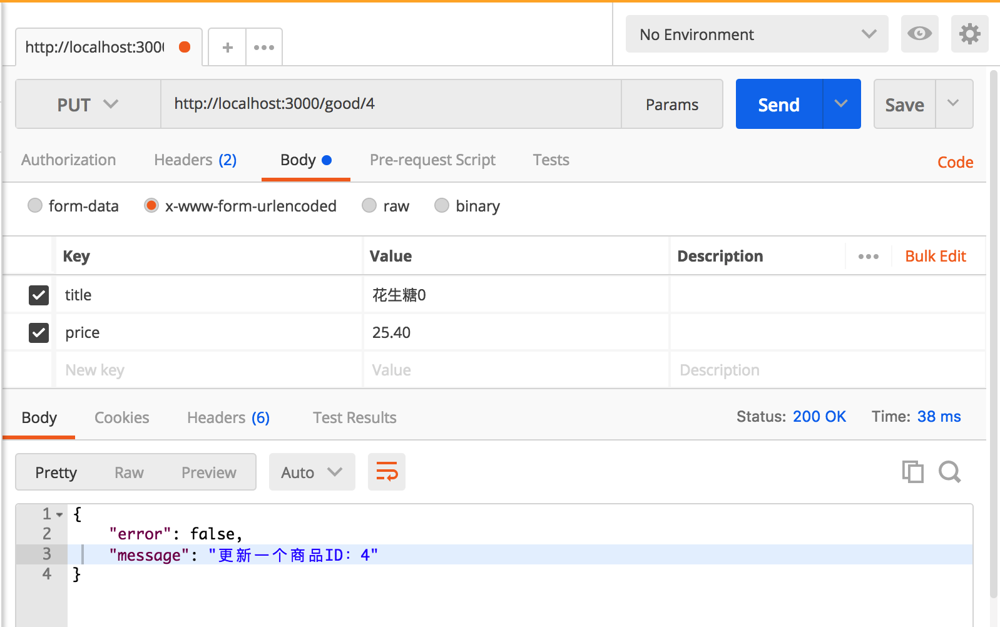
最后，我们希望能够从集合中删除记录。为此，我们将使用DELETE动词。
//删除一个商品
app.delete("/good/:id", function (req, res) {
var id = req.params.id;
var query = "delete from ?? where ?? = ?";
var table = ["goods", "id", id];
query = mysql.format(query, table);
conn.query(query, function (err, rows) {
if (err) {
res.json({ error: true, message: "执行MySQL查询时出错" });
} else {
res.json({ error: false, message: "成功删除一个商品ID：" + id });
}
});
});
当我们删除一个商品ID为4的时候
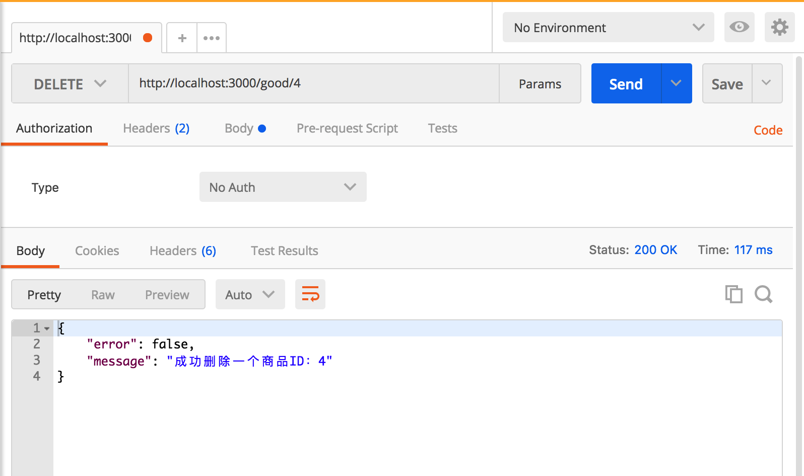
完整项目如下代码：
var express = require("express");
var mysql = require("mysql");
var bodyParser = require("body-parser");
var app = express();
var port = process.env.PORT || 8080;
//连接mysql数据库
var conn = mysql.createConnection({
host: 'localhost',
user: 'root',
password: 'root',
database: 'mynode'
});
app.use(bodyParser.urlencoded({ extended: false }));
app.use(bodyParser.json()); // Body解析器使用JSON数据
app.get('/', function(req, res) {
res.json({message:"欢迎来到API接口"});
})
//获取商品列表
app.get('/goods', function(req,res) {
var data = {
"data": ""
}
conn.query("select * from goods", function(err, rows, fields){
if(rows.length !=0) {
data["data"] = rows;
res.json(data);
} else {
data["data"] = "无数据...";
res.json(data);
}
});
});
//查询商品ID
app.get('/good/:id',function(req, res) {
var query = "select * from ?? where ?? = ?";
var table = ["goods","id",req.params.id];
query = mysql.format(query,table);
conn.query(query, function(err, rows) {
if(err) {
res.json({ error: true, message: "执行MySQL查询时出错" });
} else if(rows.length != 0){
res.json({ error: false, message: "成功", "data": rows });
} else {
res.json({ error: false, message: "无数据...."});
}
})
});
//创建一个商品
app.post('/good', function(req, res) {
var title = req.body.title;
var price = req.body.price;
var query = "insert into ??(??, ??) values(?,?)";
var table = ["goods", "title", "price", title, price];
query = mysql.format(query,table);
conn.query(query,function(err, rows) {
if (err) {
res.json({ error: true, message: "执行MySQL查询时出错"});
} else {
res.json({ error: false, message: "成功创建商品" });
}
});
});
//更新一个商品
app.put('/good/:id', function (req, res) {
var id = req.params.id;
var title = req.body.title;
var price = req.body.price;
var query = "update ?? set ?? = ?,?? = ? where ?? = ?";
var table = ["goods", "title", title, "price", price, "id", id];
query = mysql.format(query, table);
conn.query(query, function (err, rows) {
if (err) {
res.json({ error: true, message: "执行MySQL查询时出错" });
} else {
res.json({ error: false, message: "更新一个商品ID：" + id });
}
});
});
//删除一个商品
app.delete("/good/:id", function (req, res) {
var id = req.params.id;
var query = "delete from ?? where ?? = ?";
var table = ["goods", "id", id];
query = mysql.format(query, table);
conn.query(query, function (err, rows) {
if (err) {
res.json({ error: true, message: "执行MySQL查询时出错" });
} else {
res.json({ error: false, message: "成功删除一个商品ID：" + id });
}
});
});
app.listen(3000, function () {
console.log("✔ Express server listening on port " + port);
});
我的GITHUB项目地址：express_demo